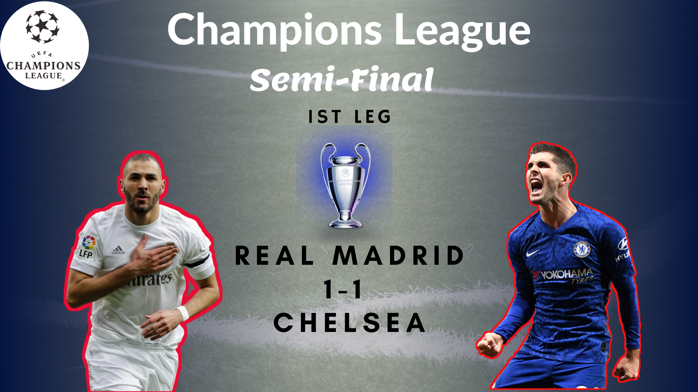

Champions League Semi-Final, Real Madrid drew with Chelsea in their home match.
Champions League Semi-Final week has been started. In the first semi-final, the home team Real Madrid faced the English side- Chealse who has won the FA Cup just a week before. It was a very competitive match as both teams are equally strong. Although Real Madrid is always the favourite when it comes to the Champions League. They played the most number of CL semi-finals. Besides, they have won the CL 13 times (Highest). But these are the stats only...... Read More